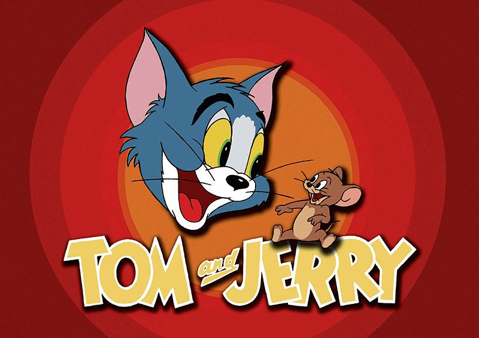
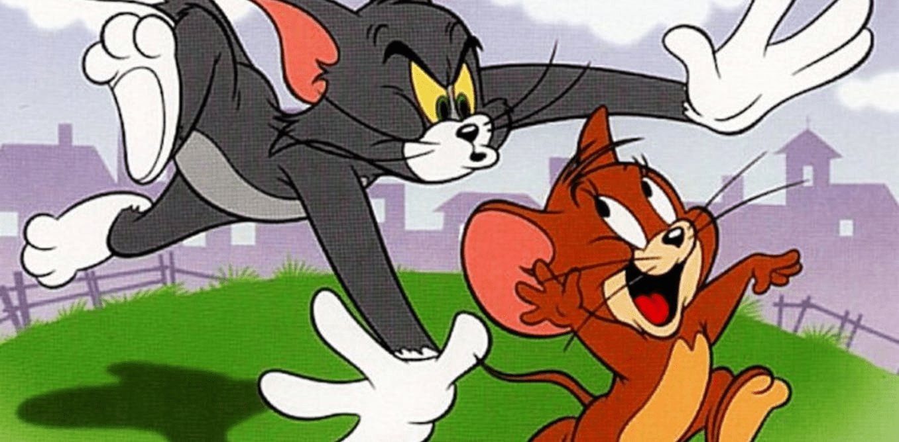
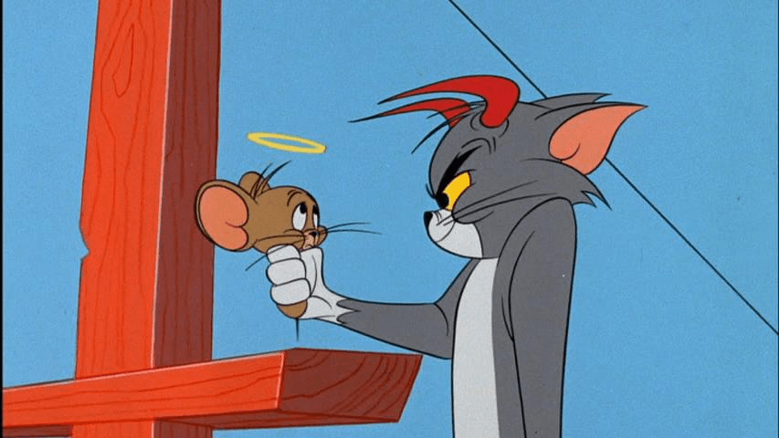
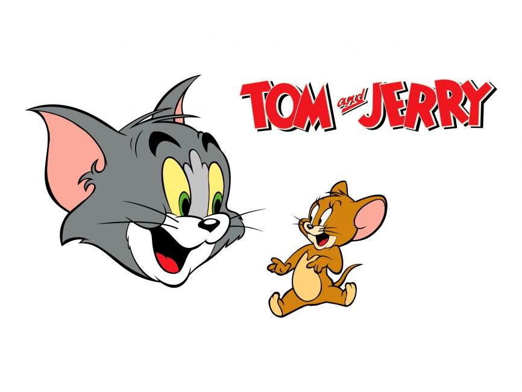

Welcome to Tom and Jerry Cartoons!
The Tom and Jerry website is the website to view different cartoons and images of Tom and Jerry. Tom and Jerry are fictional characters in the forms of a cat and mouse. Tom and Jerry is an animated series about a rivalry between a cat, Tom, and a mouse, Jerry. The series was created in the 1940s. The show consists of comedic fights between two lifelong enemies.
Tom and Jerry Media
Tom and Jerry Media is the place to go if you want to view some videos and listen to audios about Tom and Jerry. The media portion will allow you to enjoy some first-hand excitement.
 Learn More...Tom and Jerry Cartoon Gallery
Tom and Jerry Cartoon Gallery is where you can view multiple cartoon images of Tom and Jerry and see their relationship. The gallery section allows you to understand the dynamic between the rivalry of a cat and mouse.
 Learn More...Tom and Jerry Blog
Tom and Jerry Blog is about Tom and Jerry. It is where you can read interesting information about Tom and Jerry. The blog section allows you to learn more about the ficitional series. This blog is the website in general and is the place for you to skip through the tabs.
 Learn More...